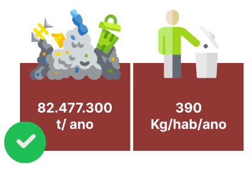

Você saberia dizer quantas toneladas de resíduos sólidos urbanos foram produzidos no Brasil em 2021?
A geração de lixo aumentou 4% durante o primeiro ano de pandemia, com uma média de 1,07 kg/hab/dia, aponta Panorama dos Resíduos Sólidos no Brasil 2021.
O estudo publicado anualmente pela Abrelpe (Associação Brasileiras das Empresas de Limpeza Pública e Resíduos Especiais), reune os dados de 2020 e mostra que a geração de RSU foi diretamente influenciada pela pandemia da COVID-19, obtendo uma média de 225.965 toneladas por dia.
A Abrelpe explica que algumas das razões para o aumento foram as novas dinâmicas sociais, onde o consumo em restaurantes foi substituído pelo delivery e os descartes diários, que antes eram descentralizados, passaram a acontecer nas residências.